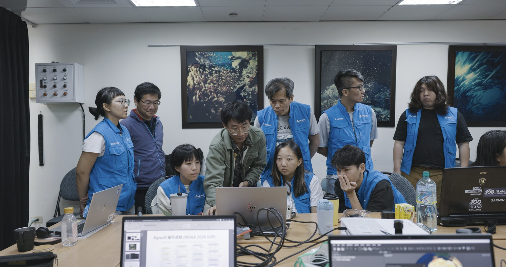

My research explores the ecology, resilience, and conservation of coral reef ecosystems across the Indo-Pacific. Below is a chronological overview of my projects, from the most recent to earlier work.
我的研究探討珊瑚礁生態系統的生態學、韌性與保育議題，研究範圍涵蓋整個印度洋—太平洋地區。以下依時間順序呈現各研究計畫，由最新至較早期的工作。

2023 – Present
Climate & Bleaching
Thermal Tolerance Thresholds of Reef-Building Corals in Taiwan
台灣造礁珊瑚的熱耐受閾值研究
Investigating the thermal stress response of dominant coral genera across latitudinal gradients in Taiwan, using bleaching indices and photophysiology to predict future bleaching vulnerability under various climate scenarios. This project tracks in-situ temperature anomalies and monitors the photosynthetic efficiency of symbiotic algae (Symbiodiniaceae) during thermal events.
透過白化指數與光生理量測，探討台灣不同緯度主要珊瑚屬對熱壓力的反應，預測未來氣候情境下的白化脆弱性。計畫追蹤原位溫度異常並監測熱事件期間共生藻（Symbiodiniaceae）的光合效率。

2022 – Present
3D Photogrammetry
Taiwan-wide Coral Reef 3D Survey (SfM Photogrammetry)
全台珊瑚礁 3D（SfM 攝影測量）調查
Developing SfM photogrammetry SOPs and GIS-based coral population dynamics analysis for a nationwide 3D reef monitoring network — in collaboration with Fan Coral Lab (NMMBA), covering Kenting, Xiaoliuqiu, Green Island, Orchid Island, and beyond.
與海生館 Fan Coral Lab 合作，開發 SfM 攝影測量標準作業流程與基於 GIS 的珊瑚族群動態分析，建立涵蓋墾丁、小琉球、綠島、蘭嶼等地的全台 3D 珊瑚礁監測網絡。

2020 – Present
Biodiversity & Taxonomy
Octocorals of Taiwan — A Comprehensive Field Guide
台灣八放珊瑚圖鑑
Collaborating with Prof. Chang-Feng Dai (NTU) to produce the definitive illustrated field guide to Taiwan's octocoral fauna, contributing field photography, sclerite microphotography, and bilingual manuscript proofreading. Volume I (Chinese edition) published in 2022 by NTU Press.
協助台灣大學戴昌鳳教授編撰台灣八放珊瑚圖鑑，負責野外攝影、骨針顯微攝影及中英文書稿校對。中文版第一冊已於 2022 年由臺大出版中心出版。

2024 – Present
Education & Outreach
Underwater 3D Survey Outreach Workshops
水下 3D 調查推廣工作坊
Hands-on workshops training researchers in SfM photogrammetry, 3D modelling with Metashape, and GIS-based reef analysis — aligning Taiwan's coral survey methods with international standards. Open-source materials on GitHub.
透過實作工作坊培訓研究人員 SfM 攝影測量、Metashape 3D 建模與基於 GIS 的珊瑚礁分析，讓台灣珊瑚調查方法與國際接軌。教材開源於 GitHub。

2019
Monitoring
Quantitative Analysis of Coral Reef Three-Dimensional Structure
珊瑚礁立體結構量化分析研究 — 以基隆市潮境海灣資源保育區為例
Applying Structure-from-Motion photogrammetry and GIS spatial analysis to quantify coral reef 3D structure at Chaojing Bay, producing millimetre-resolution DEMs for benthic habitat characterisation.
應用運動恢復結構攝影測量與 GIS 空間分析，量化潮境海灣珊瑚礁立體結構，建立毫米級解析度的數值高程模型以進行底棲棲地特徵分析。